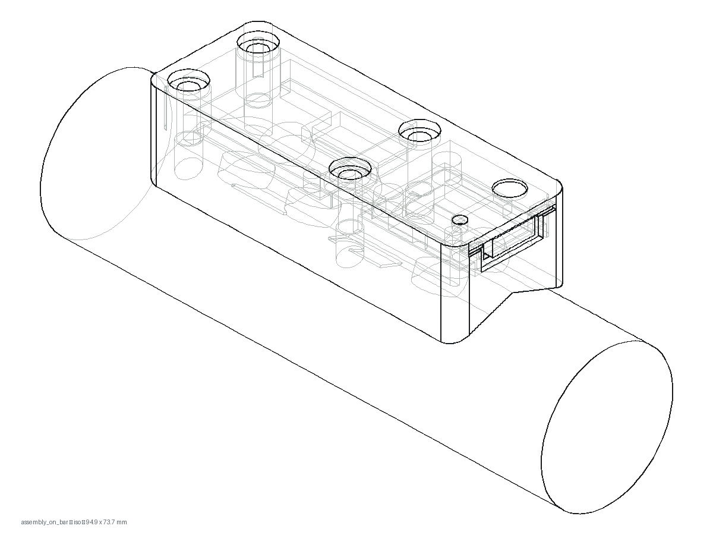
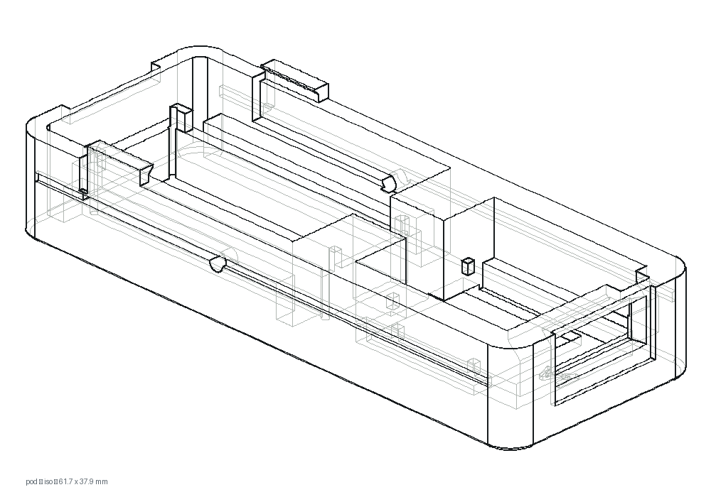

The idea is easy to say. You walk up to a machine, hold your phone to the sticker on it, and lift. A sensor the size of a matchbox sits on the weight stack and counts each rep as it happens. When you rest, the phone already knows the set: how many reps, how far the weight travelled, how fast it moved. No notebook, no typing with chalky fingers, no guessing at the end of the week what you did on Tuesday.
Saying it is easy. Making a count you can trust is the whole job. A tracker that is right nine times and silently wrong the tenth is worse than paper, because paper never pretends.


Teaching a machine once
A weight stack only moves up and down, but every machine moves it differently. A leg extension swings an arm; a cable column pulls a rope; some stacks travel 30 cm, some 60. So for each machine we ask for one thing, once: a setup lift. About ten slow, full reps. From those, the app learns how far that stack travels and which way is up, and from then on the sensor counts every set on that machine by itself.
The setup lift is where the maths does the most work. The sensor measures acceleration, not position. To turn acceleration into distance you integrate it twice, and integration has a nasty habit: every small error grows. Over one rep that is fine. Over a sloppy rep, or a gap in the data, it runs away.
The evening it said no
On 30 September, at our test gym, the leg extension refused its setup lift twice. The sensor on the stack was counting perfectly: ten reps, then ten again, live on the screen. But when the app fitted the same recording to learn the machine, it came back with nonsense.
Four metres of travel from a machine whose stack moves about forty centimetres. Our first guess was the machine itself: a leg extension swings in an arc, and maybe the fit was being fooled by the curve. That guess was wrong, and we only found out because we stopped guessing and read the recordings sample by sample.
Where the readings went
The phone keeps a raw copy of everything the sensor sends. Laid out on a timeline, the two lifts told a plain story: the board had dropped some of its own readings. Not many. 3.9 % in one lift and 6.4 % in the other. But they were not spread evenly. They clumped at the hardest moments: the instant the stack slammed back onto its stop.
That is the worst possible place to lose data. Each slam left the speed estimate a little off, 0.1 to 0.3 metres per second. The fit decides that a rep is over when the weight comes to rest, and it knows "at rest" only through that speed. With the error in it, no pause on the stop looked like rest any more. The bottoms stopped lining up, and by the third or fourth rep the double integral had wandered off into four metres of imaginary travel.
The one moment you know the speed for certain is when the weight is sitting on its stop.
Fix it where you are first
The cause was in the sensor's firmware, but you were standing at the machine with a phone that would not let you train. So the first fix went into the app.
A resting stack is the one moment its speed is exactly zero, and the raw signal says so without any integration: when the load sits on its stop, all that is left is the sensor's own noise. We measured that noise on those very lifts, 0.010 to 0.020 m/s² of spread, and set the line for "resting" at 0.04, three times higher. Now, when every other look at a setup lift would send it back, the app takes one more look. It finds the moments the stack rests, measures each rep between two of them, and takes off whatever drift is left as a straight line. Speed is pinned to zero at both ends of every rep, so a lost reading can no longer carry its error into the next one.
Replayed on the Mac, both refused lifts came out at about 41 cm, from ten reps and from six, and the answer barely moved anywhere between a line of 0.02 and 0.08. In the app since 1 October
We also wrote down what it does not fix. In the same replay, two of that evening's six sets still lost their place partway through, whatever setup we gave them. A smarter phone cannot invent readings the board never sent.
Then fix the cause
So why did a board that counts reps perfectly drop readings at all? The answer was a queue. The firmware's main loop, the one that drains the motion sensor's buffer, was also the one that handed messages to the radio, and when the radio was busy, the loop waited. While it waited, the motion sensor kept filling its small buffer, and when that buffer was full, new readings overwrote old ones. A slam is exactly when there is the most to say, so it was exactly when the loop waited longest.
The firmware change does two things: nothing on the main loop waits for the radio any more, and outgoing messages go into an outbox of 64 instead. Before it went anywhere near a sensor, we replayed that evening's radio traffic through both the old and the new way of sending. Built, in review
It will not reach your sensor by surprise, either. A new sensor version first runs on one of our own sensors with a person watching it start, and only then goes onto our server, from where the app offers it. The battery update that went out on 1 October travelled exactly that way.
What that evening changed
- A count you cannot trust is worse than no count. The goal is not more numbers; it is never showing you a rep that did not happen, and never losing one that did, even when the sensor moves around a busy gym.
- Read the data before trusting the theory. The arc of the leg extension was a good story and the wrong one. A recording on the phone settled it in an evening.
- Fix the symptom where the lifter is, and the cause where it lives. The app stopped refusing that night; the firmware fix takes longer and gets a proper review.
- Say what is done and what is not. Below is exactly where each piece stands today.
Setup lifts measured between the stack's resting moments, so a slamming leg extension can be set up.
Firmware that never makes the motion sensor wait for the radio, plus the 64-message outbox.
Rules against ghost reps for the barbell counter, the one that works without a setup lift.
Proving on real gym sessions that sets which lost their place on 30 September no longer do.
Most of building this product looks like that evening: a lifter does something perfectly ordinary, like letting a stack drop a little hard on the last rep, and the system has to be ready for it. Every one of those moments we catch makes the next set one less thing you have to think about.